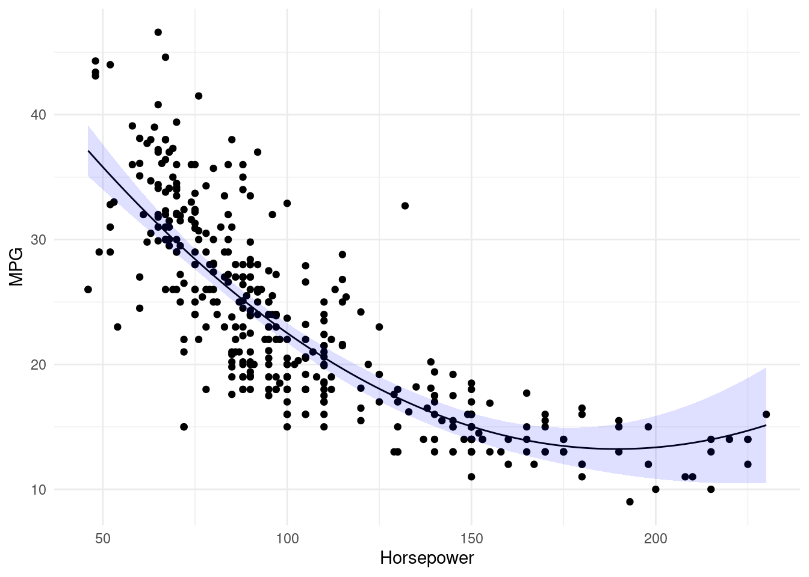
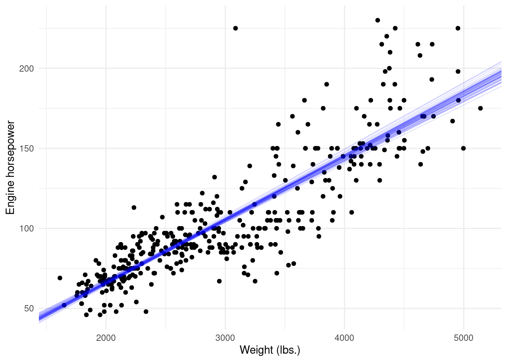

library(ISLR2)
library(rsample)
set.seed(1) # Just so you and I have the same "random" numbers.
Auto.split <- initial_split(Auto, prop = 0.5, strata = mpg)
Auto.train <- training(Auto.split)
Auto.test <- testing(Auto.split)💻 Week 05 - Lab Roadmap (90 min)
DS202 - Data Science for Social Scientists
Last week we learned how to do the Classification Methods in R. As data scientists, we need to know how to examine the results we generated and also to justify our results. So, we will focus on and practice the validation methods in the R language in this week’s lab.
If you feel confident at the current stage, free to explore more on your own. We have provided you with some supplementary online resources :
- 👉 R for Data Analytics (part of the courses by Abhay Singh)
- 👉 R for Data Science (book by Hadley Wickham & Garrett Grolemund)
Download .Rmd
Download this roadmap as an .Rmd file here.
R packages you will need:
install.packages("tidyverse")
install.packages("ISLR2")
install.packages("rsample")
install.packages("boot")Step 1: The Validation Set Approach (15mins)
Step 1: The Validation Set Approach
In this step, we will explore how to extract the subset of the whole dataset as a training dataset, and then estimate the test error rates of various linear models. The dataset is Auto from the ISLR2 package.
Step 1.1: Training vs Testing splits
Split the Auto dataset into two halves, as randomly selecting 196 observations out of the original 392 observations. We performed splits using base R in the last lab. However, this can be done more easily using the rsample package. We first create a split object Auto.split using prop = 0.5 to specify a \(50\%/50\%\) train/test split. We also specify strata = mpg as we want our train/test split to have a similar mean/standard deviation for mpg. We then create dataframes using the training and testing functions.
About
set.seed()
set.seed() is important here as it set a seed for the random number generator. Literally, the same results will be replicated in the following steps. Further information can be found in the official documentation.Seeding Random Variate Generators
Step 1.2: How good is your model at predicting the test set?
Fit a linear regression model using the training dataset (Auto.train), making the mpg as the dependent variable(x) and horsepower as the independent variable(y). Then, using the fitted model to estimate the mpg from Auto.test. Finally, calculating the MSE of the 196 observations in the validation set.
# use the lm() function to fit a linear regression model
lm.fit <- lm(mpg ~ horsepower, data = Auto.train)
# estimate the 'mpg' values by the lm.fit model
lm.pred <- predict(lm.fit, Auto.test)
# calculate MSE
mean((Auto.test$mpg - lm.pred)^2)[1] 25.58657Therefore, we have estimated the test MSE for the linear regression model, \(\mathbf{25.59}\). (Well Done! 💪 )
How to get help in R
If you are ever in doubt of what a particular R function do, you can consult the R documentation for it by using ?.
For example, you have been using lm and predict but you want to see what other arguments/parameters this function can take, just type ?lm or ?predict in your console.
How to access or create columns in R?
In base R, you generally use the $ sign to access columns or create new columns.
#You can see all the values from the 'mpg' column.
Auto$mpg [1] 18.0 15.0 18.0 16.0 17.0 15.0 14.0 14.0 14.0 15.0 15.0 14.0 15.0 14.0 24.0
[16] 22.0 18.0 21.0 27.0 26.0 25.0 24.0 25.0 26.0 21.0 10.0 10.0 11.0 9.0 27.0
[31] 28.0 25.0 19.0 16.0 17.0 19.0 18.0 14.0 14.0 14.0 14.0 12.0 13.0 13.0 18.0
[46] 22.0 19.0 18.0 23.0 28.0 30.0 30.0 31.0 35.0 27.0 26.0 24.0 25.0 23.0 20.0
[61] 21.0 13.0 14.0 15.0 14.0 17.0 11.0 13.0 12.0 13.0 19.0 15.0 13.0 13.0 14.0
[76] 18.0 22.0 21.0 26.0 22.0 28.0 23.0 28.0 27.0 13.0 14.0 13.0 14.0 15.0 12.0
[91] 13.0 13.0 14.0 13.0 12.0 13.0 18.0 16.0 18.0 18.0 23.0 26.0 11.0 12.0 13.0
[106] 12.0 18.0 20.0 21.0 22.0 18.0 19.0 21.0 26.0 15.0 16.0 29.0 24.0 20.0 19.0
[121] 15.0 24.0 20.0 11.0 20.0 19.0 15.0 31.0 26.0 32.0 25.0 16.0 16.0 18.0 16.0
[136] 13.0 14.0 14.0 14.0 29.0 26.0 26.0 31.0 32.0 28.0 24.0 26.0 24.0 26.0 31.0
[151] 19.0 18.0 15.0 15.0 16.0 15.0 16.0 14.0 17.0 16.0 15.0 18.0 21.0 20.0 13.0
[166] 29.0 23.0 20.0 23.0 24.0 25.0 24.0 18.0 29.0 19.0 23.0 23.0 22.0 25.0 33.0
[181] 28.0 25.0 25.0 26.0 27.0 17.5 16.0 15.5 14.5 22.0 22.0 24.0 22.5 29.0 24.5
[196] 29.0 33.0 20.0 18.0 18.5 17.5 29.5 32.0 28.0 26.5 20.0 13.0 19.0 19.0 16.5
[211] 16.5 13.0 13.0 13.0 31.5 30.0 36.0 25.5 33.5 17.5 17.0 15.5 15.0 17.5 20.5
[226] 19.0 18.5 16.0 15.5 15.5 16.0 29.0 24.5 26.0 25.5 30.5 33.5 30.0 30.5 22.0
[241] 21.5 21.5 43.1 36.1 32.8 39.4 36.1 19.9 19.4 20.2 19.2 20.5 20.2 25.1 20.5
[256] 19.4 20.6 20.8 18.6 18.1 19.2 17.7 18.1 17.5 30.0 27.5 27.2 30.9 21.1 23.2
[271] 23.8 23.9 20.3 17.0 21.6 16.2 31.5 29.5 21.5 19.8 22.3 20.2 20.6 17.0 17.6
[286] 16.5 18.2 16.9 15.5 19.2 18.5 31.9 34.1 35.7 27.4 25.4 23.0 27.2 23.9 34.2
[301] 34.5 31.8 37.3 28.4 28.8 26.8 33.5 41.5 38.1 32.1 37.2 28.0 26.4 24.3 19.1
[316] 34.3 29.8 31.3 37.0 32.2 46.6 27.9 40.8 44.3 43.4 36.4 30.0 44.6 33.8 29.8
[331] 32.7 23.7 35.0 32.4 27.2 26.6 25.8 23.5 30.0 39.1 39.0 35.1 32.3 37.0 37.7
[346] 34.1 34.7 34.4 29.9 33.0 33.7 32.4 32.9 31.6 28.1 30.7 25.4 24.2 22.4 26.6
[361] 20.2 17.6 28.0 27.0 34.0 31.0 29.0 27.0 24.0 36.0 37.0 31.0 38.0 36.0 36.0
[376] 36.0 34.0 38.0 32.0 38.0 25.0 38.0 26.0 22.0 32.0 36.0 27.0 27.0 44.0 32.0
[391] 28.0 31.0Step 1.3: Does it get better if I modify the features using polynomial terms?
Repeat the second part to estimate the test error for the quadratic and cubic regressions.
lm.fit2 <- lm(mpg ~ poly(horsepower, 2), data = Auto.train)mean((Auto.test$mpg - predict(lm.fit2, Auto.test))^2)[1] 19.08374lm.fit3 <- lm(mpg ~ poly(horsepower, 3), data = Auto.train)
mean((Auto.test$mpg - predict(lm.fit3, Auto.test))^2)[1] 19.00317💡 We can see a model that predicts mpg using a quadratic function of horsepower performs better than a model that involves only a linear function of horsepower. Furthermore, we see that adding a cubic function of horsepower actually increases MSE when compared to the quadratic function. Thus, the quadratic function of horsepower appears to perform the best out of all the functions considered.
Step 1.4: Visualisation
Want to see how well does the quadratic fit maps onto the raw data?
Let’s create a scatter plot with horsepower on the x-axis and mpg on the y-axis. Now, we can predict mpg using lm.fit2 and specify interval = 'confidence' to get \(95\%\) confidence intervals. Along with geom_line we can use geom_ribbon to plot the line of best fit and associated confidence intervals. Remember to specify alpha so that we can see the predicted value - otherwise the ribbon will not be translucent.
library(tidyverse)
sim.data <- data.frame(horsepower = 46:230)
sim.pred <- predict(lm.fit2, sim.data, interval = 'confidence')
sim.data <- cbind(sim.data, sim.pred)
ggplot(data = sim.data, aes(x = horsepower, y = fit)) +
geom_point(data = Auto, aes(x = horsepower, y = mpg)) +
geom_line() +
geom_ribbon(aes(ymin = lwr, ymax = upr), alpha = 0.125, fill = 'blue') +
theme_minimal() +
labs(x = 'Horsepower', y = 'MPG')
Step 2: k-Fold Cross-Validation (5mins)
Step 2: k-Fold Cross-Validation
It will be easy to follow the former procedure in Step 2, by the cv.glm to implement K-fold CV.
Step 2.1: Using K=10 folds
Let’s estimate Cross-Validation errors corresponding to the polynomial fits of orders one to ten using ten-fold cross-validation (via K = 10).
The cv.glm() function is part of the boot library. Meanwhile, you can explore the cv.err by yourself to see what call,K,delta and seed mean. This online webpage will be useful when interpreting the results.
library(boot)
set.seed(17)
cv.error.10 <- c()
for(i in 1:10){
glm.fit <- glm(mpg ~ poly(horsepower, i), data = Auto)
cv.error.10[i] <- cv.glm(data = Auto, glmfit = glm.fit, K = 10)$delta[1]
}
cv.error.10 [1] 24.27207 19.26909 19.34805 19.29496 19.03198 18.89781 19.12061 19.14666
[9] 18.87013 20.95520# we can plot the results by passing a data frame to ggplot
cv.data <- data.frame(poly = 1:10, cv.errs = cv.error.10)
ggplot(data = cv.data, aes(x = poly, y = cv.errs)) +
geom_point() +
geom_line(linetype = 'dashed') +
scale_x_continuous(breaks = 1:10) +
theme_minimal() +
labs(x = 'Degree of polynomial', y = 'Cross-validated MSE')Note that in the line of cv.error.10[i] <- cv.glm(data = Auto, glmfit = glm.fit, K=10)$delta[1], it will be very strict to K rather than k.
Step 3: The Bootstrap (20mins)
Step 3: The Bootstrap
We have learnt the theoretical method regarding Bootstrap. I understand that it may be a bit difficult for beginners in statistics, but we will mainly focus on the coding implementation and visualisation here. Also, we will introduce how to create a function below.
Functions are “self contained†modules of code that accomplish a specific task. referenced from Functions and theri argumens
With the help of a function, you can reuse the same pattern codes with a simple function name. In fact, you work with functions all the time in R - perhaps without even realising it!
Step 3.1 Estimating the Accuracy of a Linear Regression Model
In this step, we will use the boostrap approach to assess the variability of a coefficient estimate. For the sake of simplicity we will look at the relationship between weight and horsepower which appears to be linear.
Create a function as boot.fn() which
boot.fn <- function(data, index) {
lm(horsepower ~ weight, data = data[index,])$coefficients
} boot.fn simply returns a vector of coefficient estimates. It takes two parameters: data and index. data is a placeholder for the dataframe used in the model. index is a placeholder for the sample used to subset the dataframe. Other than this, the body of the function should look familiar. We are estimating a linear model where we are looking to predict horsepower by weight, and then extracting the coefficients.
Now, compare the results from bootstrap estimates and the standard estimates
# bootstrap with 1000 times
boot(Auto, boot.fn, 1000)
ORDINARY NONPARAMETRIC BOOTSTRAP
Call:
boot(data = Auto, statistic = boot.fn, R = 1000)
Bootstrap Statistics :
original bias std. error
t1* -12.18348470 1.659517e-01 3.221766853
t2* 0.03917702 -6.479214e-05 0.001251433summary(lm(horsepower ~ weight, data = Auto))$coef Estimate Std. Error t value Pr(>|t|)
(Intercept) -12.18348470 3.570431493 -3.412328 7.115312e-04
weight 0.03917702 0.001153214 33.972031 1.364347e-118We can find that in the bootstrap estimation process, \(\mathrm{SE}(\hat{\beta}_{0}) = 3.5704\) and \(\mathrm{SE}(\hat{\beta}_{1}) = 0.0012\) , while in the standard estimation process, \(\hat{\beta}_{Intercept}=-12.1835\) and \(\hat{\beta}_{horsepower}=0.0392\).
To get a better intuition of what the bootstrap algorithm does let’s create a ggplot. We can get the intercepts and slopes estimated and overlay them on a scatterplot (weight on x-axis, horsepower on y-axis). We will create 50 bootstrap resamples for ease of visualisation and use geom_abline to overlay all the lines of best fit.
boot.model <- boot(Auto, boot.fn, 50)
boot.df <- as.data.frame(boot.model$t)
names(boot.df) <- c('b0','b1')
ggplot(data = Auto, aes(x = weight, y = horsepower)) +
geom_point() +
geom_abline(data = boot.df,
aes(intercept = b0, slope = b1),
alpha = 0.1, colour = 'blue') +
theme_minimal() +
labs(x = 'Weight (lbs.)', y = 'Engine horsepower')
Step 4: 🎯 Practical Exercises (50 mins)
Step 4: 🯠Practical Exercises
Since then, we have known and implemented the coding with Cross-validation and Bootstrap. In this practical case, we will use the new dataset Default and also Weekly from the ISRL package. Do not forget to set a random seed before beginning your analysis.
Some questions are listed below. You are required to try to answer these questions in pairs using R commands. We will go over the solutions once everyone has finished these questions.
Q1: Train vs test sets
For the Default dataset, please split the sample set into a training set and a test set, then fit a logistic regression model that uses income and balance to predict default:
- Q1.1: Use three different splits of the observations into a training set and a test set.
- Q1.2: Fit three multiple logistic regression models using only the training observations.
- Q1.3: Based on the three models, obtain a prediction of default status for each individual in the test set by computing the posterior probability of default for that individual, and classifying the individual to the
defaultcategory if the posterior probability is greater than 0.5. - Q1.4: Based on the three models, compute the test set error, which is the fraction of the observations in the test set that are misclassified.
Q2: Bootstrap
For the Default dataset, We continue to consider the use of a logistic regression model to predict the probability of default using income and balance on the Default data set.
In particular, we will now compute estimates for the standard errors of the income and balance logistic regression coefficients in two different ways: 2.1. Using the bootstrap, 2.2. Using the standard formula for computing the standard errors in the glm() function. As following,
Using the
summary()andglm()functions, determine the estimated standard errors for the coefficients associated withincomeandbalancein a multiple logistic regression model that uses both predictors.Write a function,
boot.fn(),that takes as input theDefaultdata set as well as an index of the observations, and that outputs the coefficient estimates forincomeandbalancein the multiple logistic regression model.Use the
boot()function together with yourboot.fn()function to estimate the standard errors of the logistic regression coefficients forincomeandbalance. Then, Create a histogram of the bootstrap parameter estimates withggplot2, and also set thebins=20, title as1,000 Bootstrap Parameter Estimates - 'balance' & 'income.